My degree project at RISD used the overarching topic of health to explore the themes of distortion, repetition, and mass effect. Research and experiments were documented and assembled into a 32 page broadsheet.
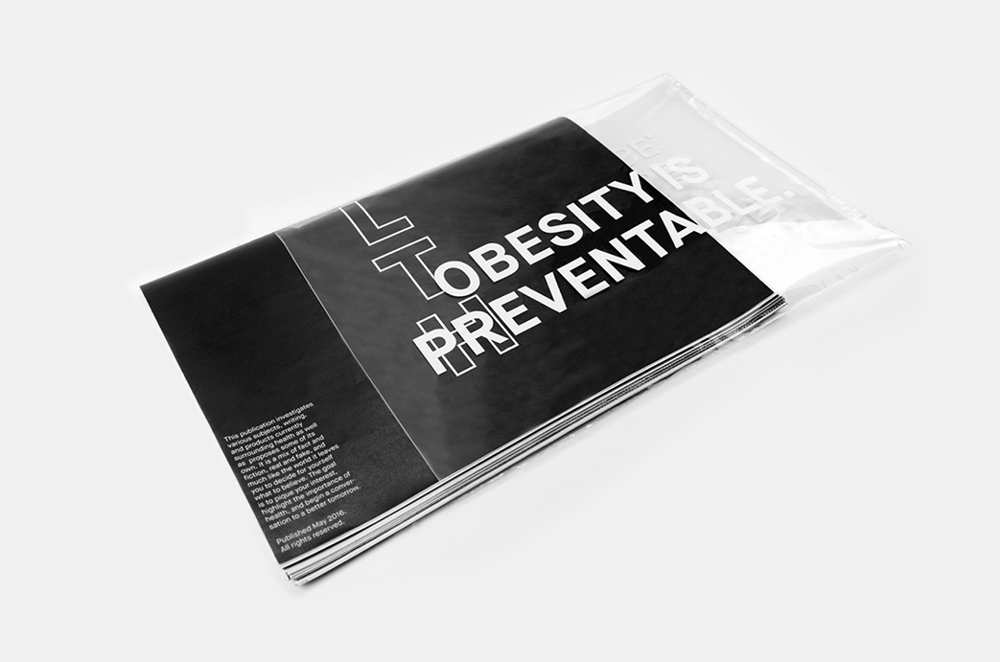
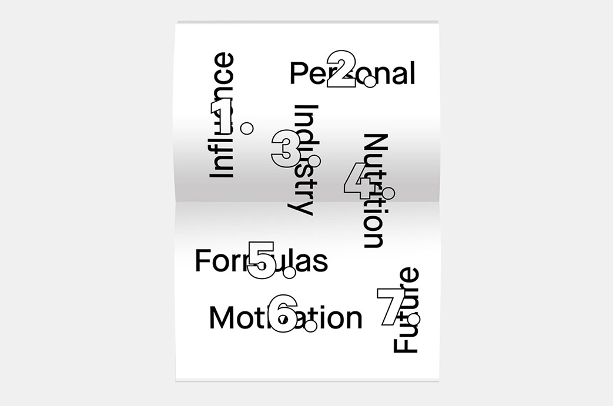
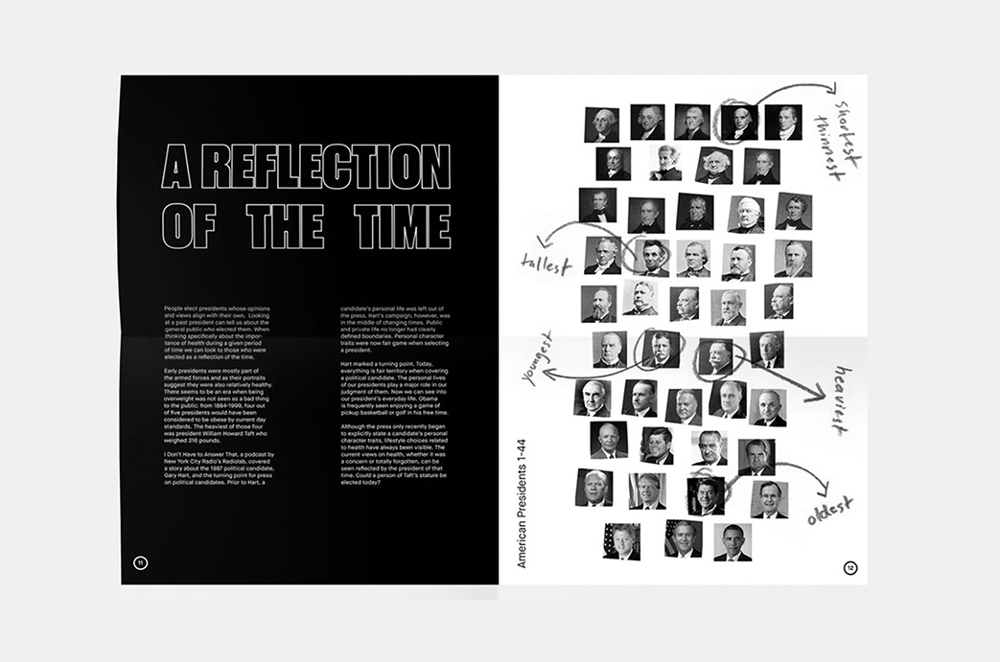
This 610 page publication was designed in collaboration with classmates in “Newly Formed”—an advanced course in form-making at RISD. Purchase a copy at Draw Down Books.
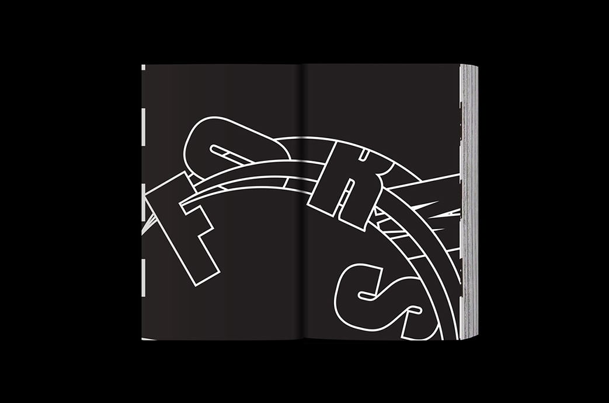
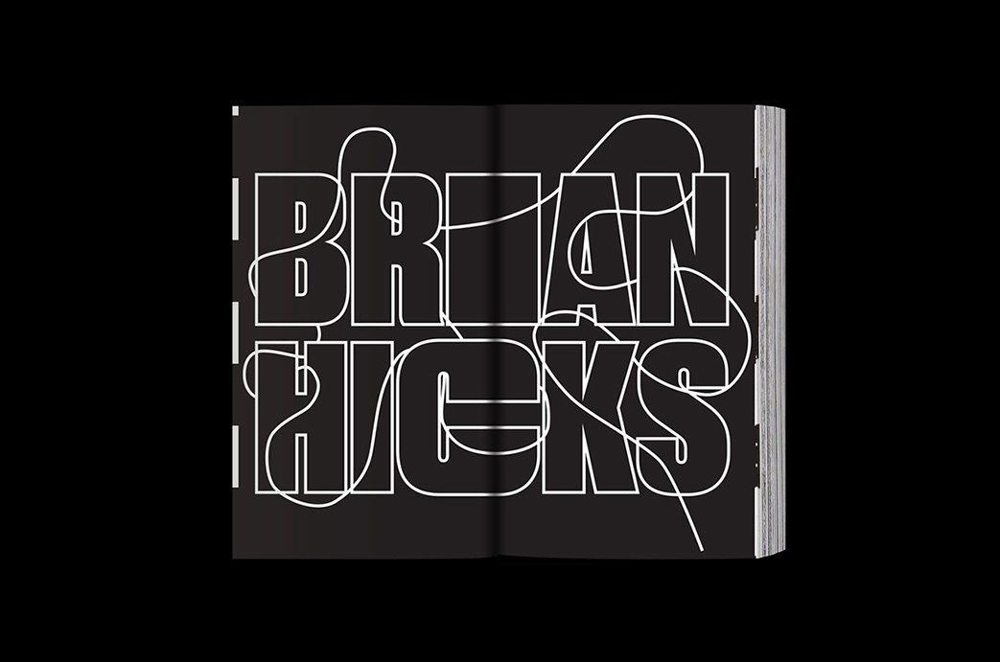
During my 6 month internship at Strava I designed a wide range of products spanning across teams, platforms, and mediums. Including physical jerseys, marketing materials, product mock-ups, and icons for monthly challenges. Visit strava.com
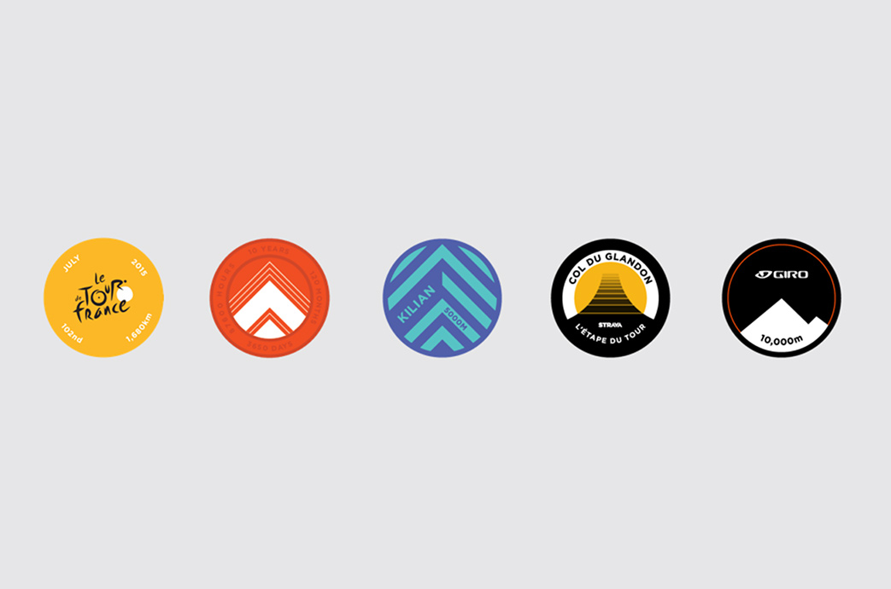
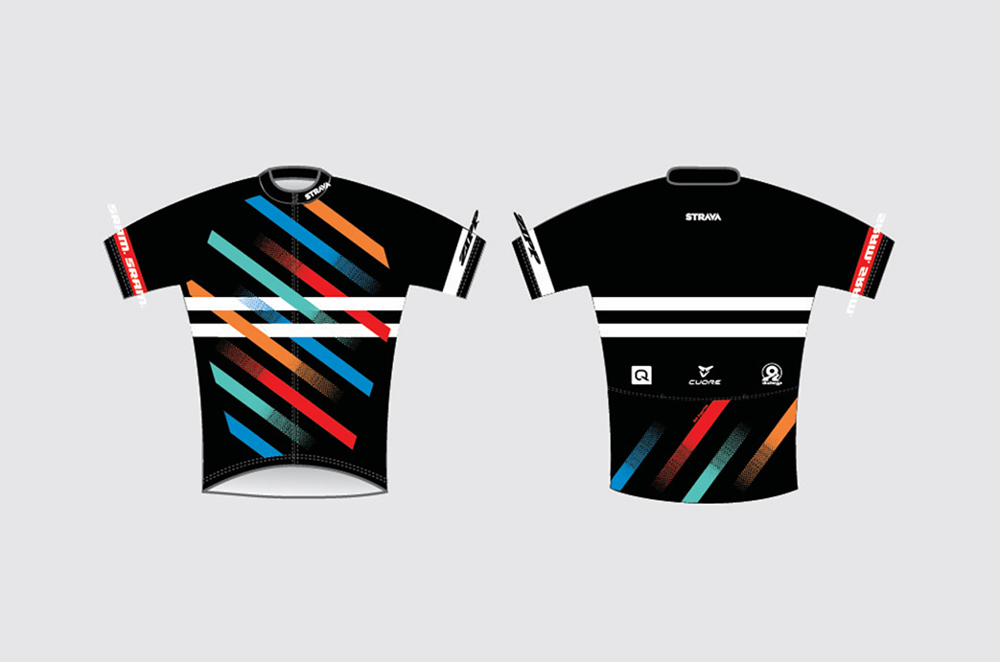
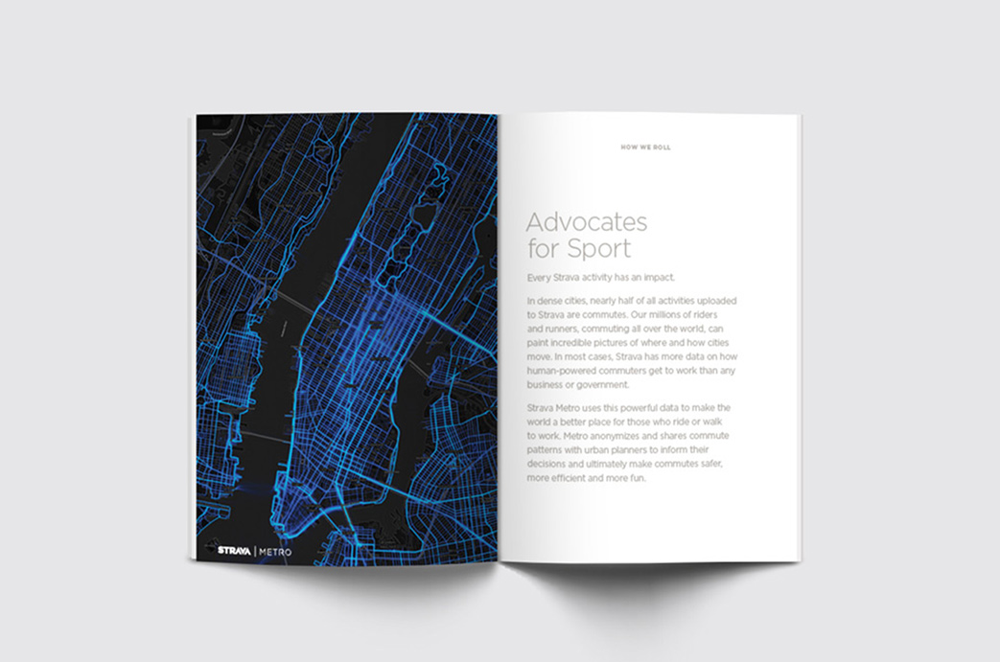
This kit design was created for RISD Cycling's 2016 race season. The kit includes a jersey, bibs, vest, windbreaker, socks, arm warmers, knee warmers, and a bandana. Visit risdcycling.com
Squarespace template designs.
Squarespace Circle branding.
Squarespace neon installation inside Madison Square Garden.


 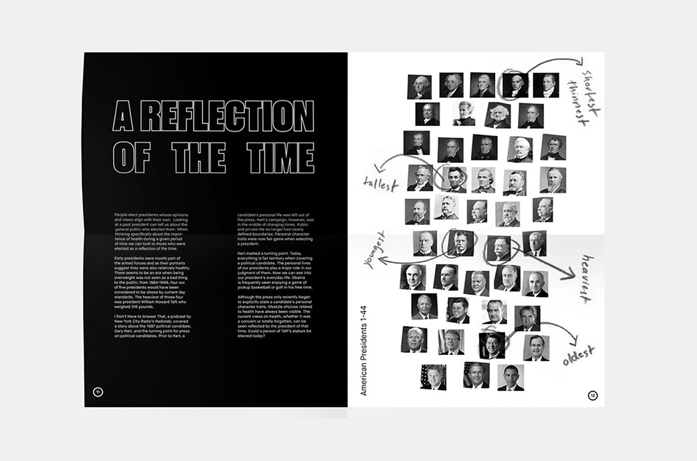
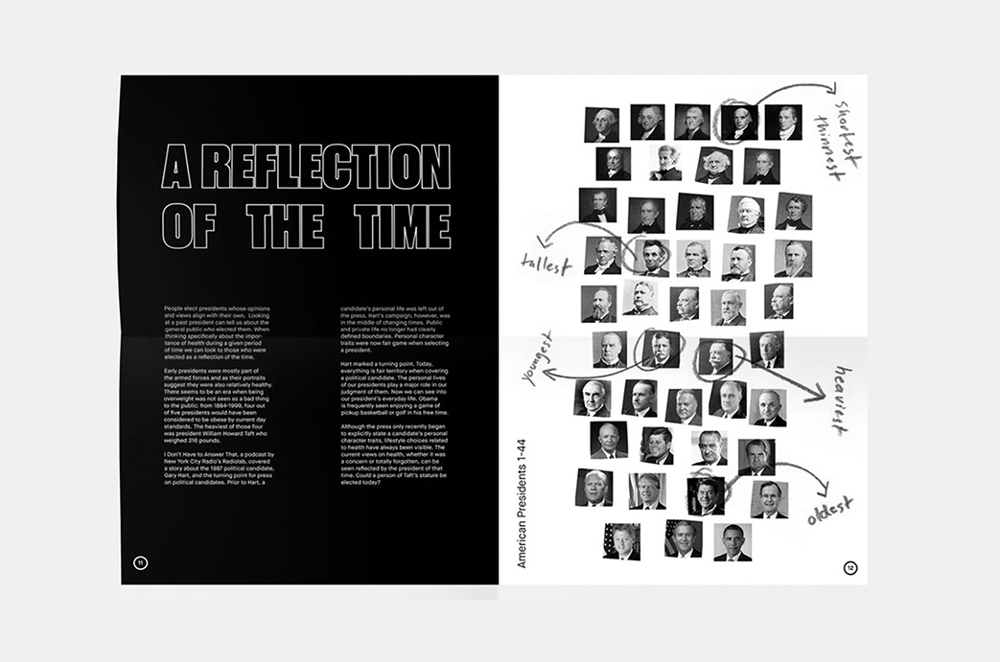


 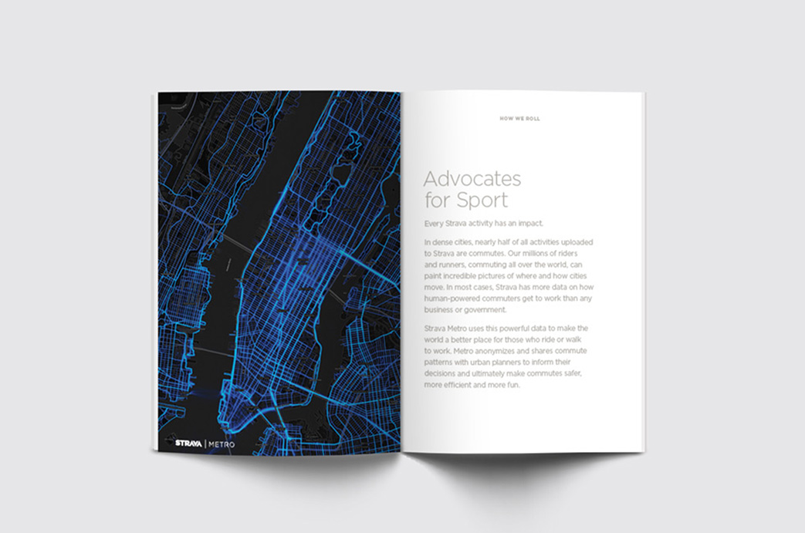
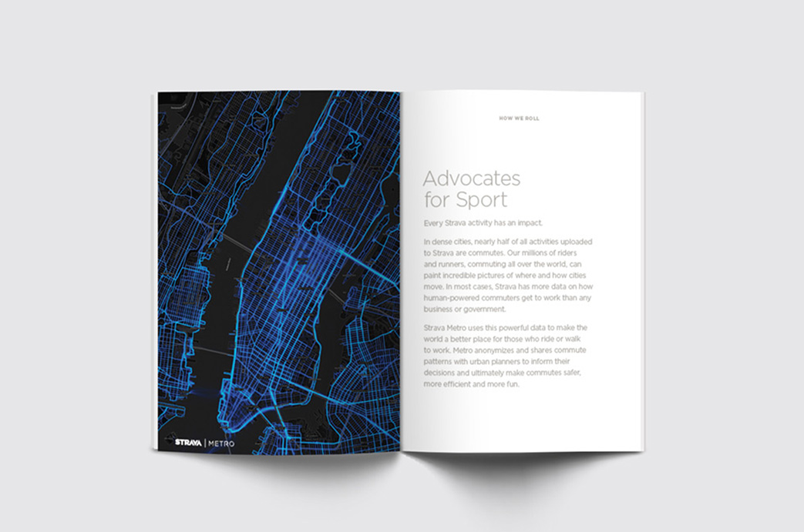